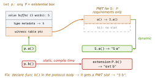

ios-swift · folio
In one line: A protocol is a contract; an extension adds shared behaviour. Only requirements
(declared in the protocol body) go into the witness table and dispatch dynamically — a method
that lives only in the extension is picked statically from the declared type.
some P = one hidden concrete type (static); any P = a box holding any conformer (dynamic).
Download PDF Print view LaTeX source

How it works
- POP (WWDC15): compose behaviour from protocols + protocol extensions (default implementations) instead of a base class. Works for
struct/enum, allows many conformances and retroactive conformance to types you don’t own.protocol D: AnyObject= class-only, so a delegate can beweak. - Requirement vs extension-only: a requirement with a default impl is still a customisation point — the conformer’s version wins everywhere. An extension-only method is not in the witness table → chosen by the static type.
- Witness table (PWT): one per conformance (
S: P), mapping each requirement to S’s implementation — the protocol analogue of a class vtable. - Associated type:
associatedtype Item— chosen by the conformer (Sequence.Element). A generic parameter<T>is chosen by the caller. Primary associated type (5.7):protocol Collection<Element>→some Collection<Int>,any Collection<Int>. - Constraints:
<T: Hashable & Codable>,where C.Element: Equatable, same-typewhere A.Element == B.Element. Conditional conformance:extension Array: Equatable where Element: Equatable. some P(opaque): the callee fixes one concrete type; the caller can’t name it but the compiler knows it → static dispatch, specialisation, associated types kept. Allreturns must be the same type. As a parameter,some Pis sugar for<T: P>.any P(existential, keyword since 5.6): a box that can hold any conformer —[any Shape]can mix types. Costs: 3-word inline buffer (bigger values go to the heap), dynamic calls through the PWT, no specialisation. Pre-5.7 a protocol withassociatedtype/Self“can only be used as a generic constraint”.- Type erasure: a concrete wrapper that hides the underlying type —
AnySequence,AnyHashable,AnyPublisher,AnyView; hand-rolled by storing the conformer’s methods as closures. - Specialisation: the optimiser clones generic code per concrete type (same module, WMO, or
@inlinable) → witness calls become direct calls. - Class extensions are statically dispatched too: you cannot
overridea method declared only in an extension (unless@objc).
Example
protocol P { func a() } // requirement
extension P {
func a() { print("ext a") } // default impl
func b() { print("ext b") } // NOT a requirement
}
struct S: P {
func a() { print("S a") }; func b() { print("S b") } }
let p: any P = S()
p.a() // "S a" requirement -> witness table
p.b() // "ext b" static: declared type is P
S().b() // "S b" static: declared type is S
func top<C: Collection>(_ c: C) -> C.Element?
where C.Element: Comparable { c.max() }
func nums() -> some Collection<Int> { [1, 2, 3] }Why p.b() ignores S.b

| dispatch | used for | cost |
|---|---|---|
| static | struct/enum methods, final, static,
extension-only methods, globals | direct call, inlinable |
| vtable | overridable (non-final) class methods | 1 table lookup |
| witness | protocol requirement via any P or <T: P> | PWT lookup |
| message | @objc dynamic (KVO, swizzling) | objc_msgSend, slowest |
Traps
- Extension-only method + existential = static dispatch:
p.b()prints"ext b"even thoughSdefinesb(). The classic dispatch surprise. - “
someandanyare the same.”some= one fixed type chosen by the callee (returning[Int]orSet<Int>from two branches fails);any= a runtime box, heterogeneous. func make<T>() -> T—Tis the caller’s choice; to return a type you pick but hide, use-> some P.privateis not a dispatch guarantee — the optimiser may infer final;finalis the guarantee.- User generics are invariant:
Box<Cat>is not aBox<Animal>(Array/Optionalare special-cased).
Generic vs some vs any
<T: P> | some P | any P | |
|---|---|---|---|
| who picks the type | caller | callee (hidden) | anyone, at runtime |
| one call, many types | no | no | yes ([any P]) |
| dispatch | static / specialised | static | witness table |
| storage | inline | inline | box, heap if > 3 words |
[1pt] Swift 5.7 (SE-0352): an
any P can be passed straight to a <T: P>
function — the existential is opened for the call.
Remember
“In the body = in the table = dynamic. Only in the extension = static.” some = same type every time; any = any type, in a box. Dispatch order fast→slow: S V W M (Static, Vtable, Witness, Message).